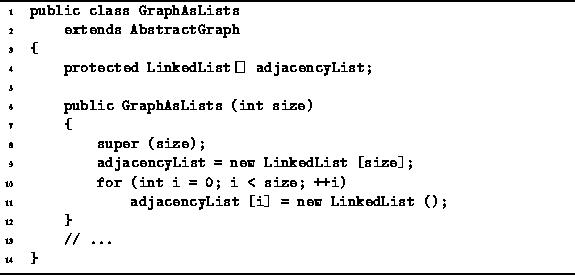
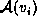
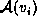

Data Structures and Algorithms
with Object-Oriented Design Patterns in Java
Data Structures and Algorithms
with Object-Oriented Design Patterns in Java
Program  introduces the GraphAsLists class.
The GraphAsLists extends the AbstractGraph class
introduced in Program .
The GraphAsLists class represents the edges
of a graph using adjacency lists.
introduces the GraphAsLists class.
The GraphAsLists extends the AbstractGraph class
introduced in Program .
The GraphAsLists class represents the edges
of a graph using adjacency lists.

Program: GraphAsLists fields and constructor.
Each instance of the GraphAsLists class
represents an undirected graph, say  .
The set of vertices,
.
The set of vertices,  , is represented using
the vertex array inherited from the AbstractGraph base class.
The set of edges,
, is represented using
the vertex array inherited from the AbstractGraph base class.
The set of edges,  , is represented using
the adjacencyList field,
which is an array of linked lists.
The
, is represented using
the adjacencyList field,
which is an array of linked lists.
The  linked list, adjacencyList[i],
represents the set  which is
the set of edges emanating from vertex
linked list, adjacencyList[i],
represents the set  which is
the set of edges emanating from vertex  .
The implementation uses the LinkedList class
given in Section .
.
The implementation uses the LinkedList class
given in Section .
The GraphAsLists constructor takes a single argument
of type int that specifies
the maximum number of vertices that the graph may contain.
This quantity specifies the lengths of the
array of vertices and the array of adjacency lists.
The implementation of the GraphAsLists class is left
as programming project for the reader (Project ).
 Copyright © 1998 by Bruno R. Preiss, P.Eng. All rights reserved.
Copyright © 1998 by Bruno R. Preiss, P.Eng. All rights reserved.